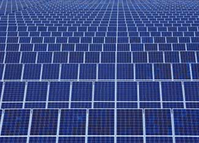

ISTOCKPHOTO
Over 1,000 organizations around the United States are buying utility-scale energy from renewable resources such as wind, solar and biomass. The combined green power purchased by these companies is about 16 billion kilowatt hours a year.